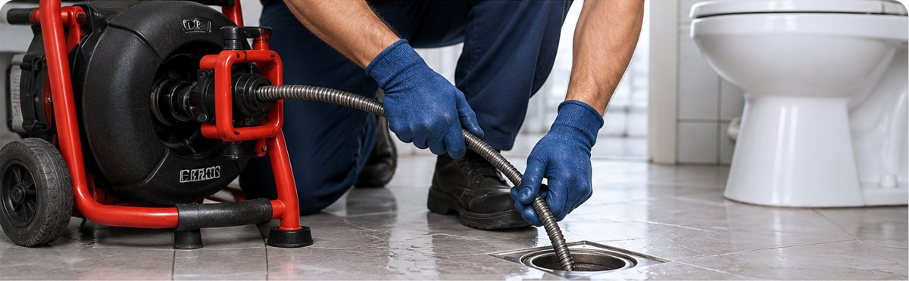

Ralos
Desentupimento de ralos residenciais e comerciais.
NWT • EMBU DAS ARTES E REGIÃO
Serviços de desentupimento de ralos, pias, vasos sanitários e redes de esgoto para residências e estabelecimentos comerciais.
Solicitar orçamento pelo WhatsApp →
NOSSOS SERVIÇOS
Desentupimento de ralos residenciais e comerciais.
Desentupimento de pias e tubulações de escoamento.
Desentupimento de vasos sanitários.
Serviços de desentupimento de redes de esgoto.
Atendimento em Embu das Artes e região. Entre em contato para informar sua necessidade e solicitar um orçamento.
Conversar no WhatsApp →